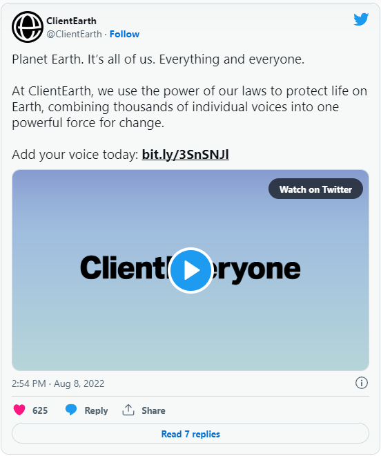
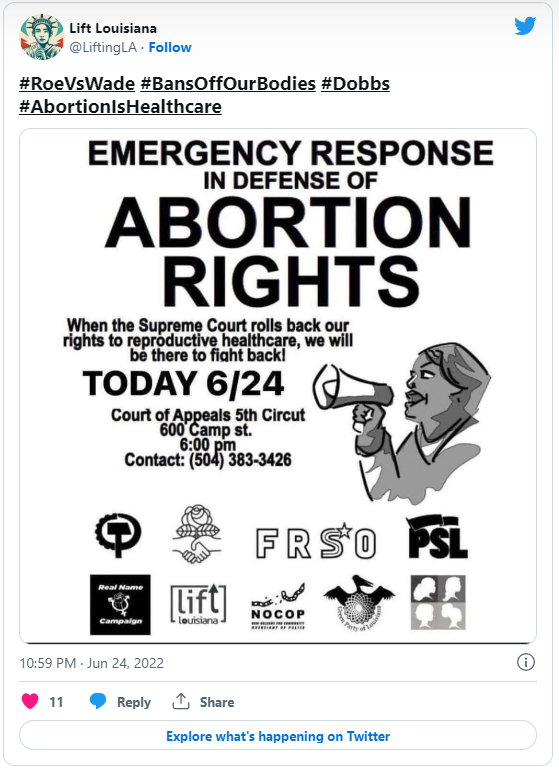

Today marks National Nonprofit Day – a time to recognize and honor the crucial contributions nonprofits provide to their communities. Whether it be legal or mental health services, supporting the arts or accessible education, or fighting for climate justice and animal welfare, nonprofits operate in virtually every field with the mission to empower and uplift marginalized individuals.
By definition, nonprofits are built not to make a profit but instead to provide a public service. These organizations can be lifelines to the individuals they serve because they can offer services at a much lower cost than a traditional business would.
On August 17th, 1894, the U.S. government signed the Tariff Act of 1894 into law which imposed the first federal income tax on companies – but provided a special tax exemption for nonprofits and charitable organizations. To celebrate this occasion, Sherita Herring, a philanthropist, and motivational speaker founded National Nonprofit Day.
While there are a ton of amazing groups out there, here are five nonprofits that are making a difference in the lives of their community.
ClientEarth combats climate change
Climate change is impacting our world in unprecedented ways. NASA ranked June 2022 as one of the warmest Junes on record, the U.S. saw the hottest nights ever in July 2022, and across the globe this year, there have been client disasters in countries like Brazil, Mexico, Afghanistan, and India to name just a few.
ClientEarth is a UK-based organization fighting to save our planet by working to implement systematic change. Not only are they advocating for climate justice, but a goal of theirs is to create and pass actual legislation that will turn climate solutions into real laws. The six global issues they focus on include: ending pollution, defending wildlife and habitats, protecting forests, strengthening the rule of law, tackling climate change, and promoting environmental justice.

Just this June, the organization won a major victory against the UK government. The outcome ruled the government must produce detailed climate policies to show how they’ll reduce emissions sufficiently to meet its legally binding carbon budgets.
Lift Louisiana fights for abortion and reproductive rights
In light of the reversal of Roe v. Wade, abortion rights have been a major topic of discussion in the U.S. Still, reproductive justice is an issue that impacts many people globally. But Lift Louisiana is fighting back. A nonprofit organization, its mission is “to educate, advocate, and litigate for policy changes needed to improve the health and wellbeing of Louisiana's women, their families, and their communities.”

Louisiana has one of the strictest abortion laws in the U.S. And after the reversal of Roe v. Wade, abortion immediately became illegal in the state – with no exceptions for rape or incest. This makes the work of Lift Louisiana so important, as the organization has vowed to continue to support peoples’ rights to abortion.
In a recent podcast episode of The New York Times’s The Daily, entitled “Pregnant at 16,” the organization’s co-executive director Lakeesha Harris shared her personal story of being pregnant at a young age and described why fighting for abortion rights is so important to her.
“When you don’t give people all of their options. When you don’t give people all of their resources. When you don’t give people the health care that they deserve and need, you limit their life, the possibilities. You limit everything about them,” Harris said.
Donate to Lift Louisiana today.